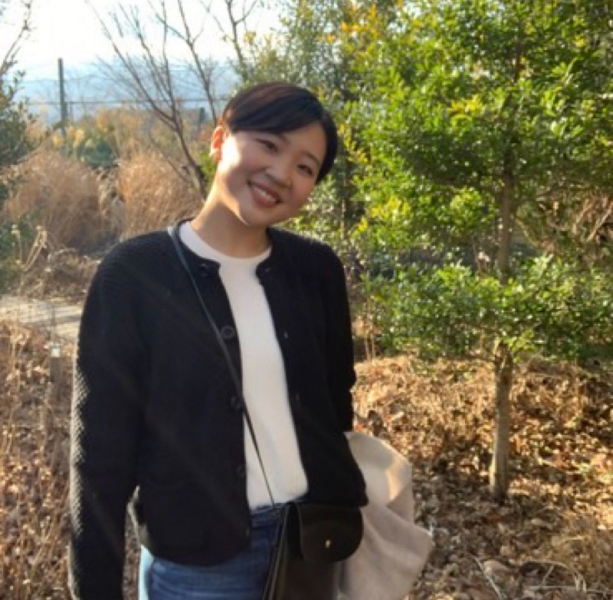

I’m a literary scholar and emerging comparatist whose research examines narrative ethics and non-normative articulation across modern and contemporary fiction. I am currently completing an MA in Foreign Languages and Literatures at National Taiwan University, where my thesis analyzes strategic opacity and dividual narration in Rachel Cusk’s Outline trilogy.
My work brings new materialist theory (Karen Barad, Jane Bennett) into conversation with narrative theory (Paul Ricoeur, Gérard Genette) to theorize what I call “narrative assemblage”—literary forms that relocate agency from confessing subjects to dividual narrators who curate residues, opacities, and material fragments. My developing PhD project, After Confession, traces this strategy from Natsume Sōseki’s Kokoro (1914) through Kazuo Ishiguro’s Never Let Me Go (2005), Ruth Ozeki’s A Tale for the Time Being (2013), and Rachel Cusk’s Outline trilogy (2014–2018).
I hold a BA from Waseda University (School of International Liberal Studies), and I have work published or under review in Narrative, AI & Society, and other venues. My broader interests include modernist and contemporary fiction, feminist and queer theory, trauma studies, new materialisms, and critical AI ethics.
I am currently preparing for a PhD program in Fall 2026. I welcome inquiries about my research, potential collaborations, or speaking opportunities. Please feel free to reach out via email at r11122017@ntu.edu.tw.
My master’s thesis reads Cusk’s Outline as a study of “narrative assemblage,” in which Faye’s dividual narration curates other people’s stories, places, and objects while maintaining strategic opacity. Combining Jane Bennett’s vital materialism with narrative theory, the project argues that Outline resists contemporary therapeutic and neoliberal demands for confessional transparency and rethinks what counts as narrative agency.
This article rereads Kokoro as an early scene of confessional crisis in Japanese modernity. Rather than treating Sensei’s letter as a belatedly coherent self-explanation, it argues that the failure of emplotment exposes confession itself as a form of violence. The essay theorizes watashi’s later handling of the letter, seasonal atmospheres, and architectural spaces as an ethics of re-assembly: living with another’s residue without forcing closure.
This essay reframes Portrait of a Lady on Fire not simply as a manifesto of the “female gaze” but as a study of how looking is materially arranged. Drawing on Karen Barad’s agential realism, it argues that the film exposes the gaze as an apparatus that produces “painter” and “model” through intra-action rather than mediating between pre-existing subjects, and develops a queer optic in which bodies, canvases, light, and sound co-compose desire.
This article critiques the cultural metaphor of “autonomous AI” by foregrounding the human and more-than-human labor that makes AI systems appear self-sufficient. Drawing on queer feminist theories of compulsory sexuality and able-bodiedness, along with scholarship on ghost work and data labor, it develops the concept of “compulsory autonomy” to describe a regime that demands performances of independence while obscuring dependency, vulnerability, and ongoing exploitation.
This article reads Never Let Me Go from the side of the organ-donation system it usually renders invisible. It argues that the clones’ bodies are made hyper-transparent as organs while their attachments and memories remain illegible—as if they were part of the nonhuman infrastructure that keeps others alive. Bringing crip theory into conversation with Baradian apparatus, the essay theorizes Kathy’s “I/we” as a dividual narrative assemblage that foregrounds infrastructural life and exposes crip opacity under compulsory able-bodiedness and infrastructuralization.
Email / PhilPeople / Medium